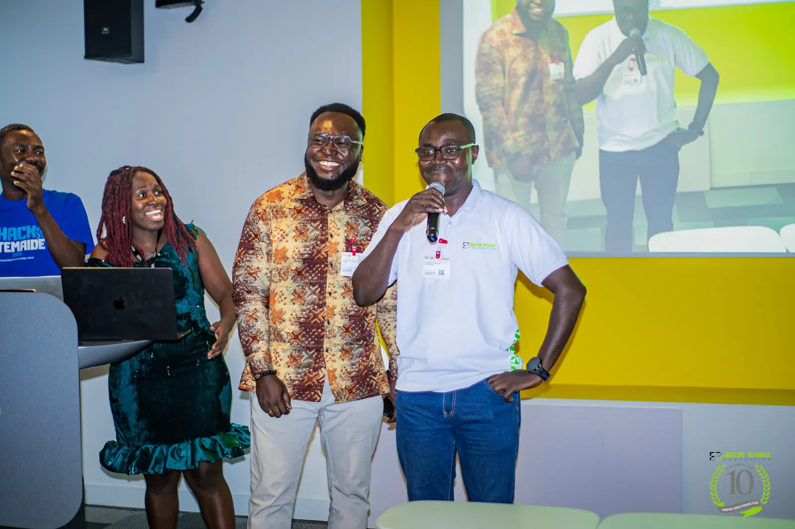

- Home
- Bootcamp
- Overview
Six disciplines.
One cohort.
Zero cost.
A practical, in-person programme at the Maxim Nyansa Foundation in Accra, built around the skills security teams hire for.
- Training starts
- 5 Oct 2026
- Training ends
- December 2026
- Format
- In person
- Cost
- Free
- Venue
- Foundation premises

What the cohort learns.
The six areas below are confirmed by the Foundation. Their order and weekly split are still to be confirmed.
Topics verifiedPractical first. Career-ready by design.
The Foundation’s IT professional training combines technical practice with the skills that help graduates get hired.

Hands-on practice
Learning by doing, in labs and on real tools rather than slides alone.
Soft skills
Communication, teamwork and presenting findings, all part of the programme.
Career coaching
Support to turn new skills into job applications and interviews.
A real-life project
Each bootcamp includes a practical project applied to a real problem.
Certification exams
Foundation bootcamps include EXIN certification exams. Exams for this cohort to be confirmed
Where it all started
The Foundation piloted its first cybersecurity bootcamp in 2020 with 14 trainees. The 2026 cohort builds on that pilot.
Good to know.
Does the bootcamp cost anything?
Where does training happen?
When does it run?
Can I still apply?
How long is the programme?
See the plan week by week.
Follow the indicative timeline from week one to graduation.
Open the journey